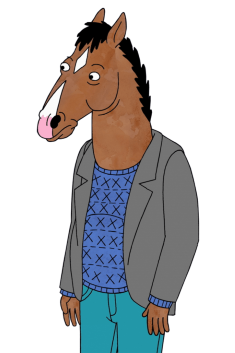

I love watching movies. Especially TV shows.
When it comes to movies, one of my top 10 favourites is (and of course) "Inception".
But I have to admit, when movies become so commercialized they lose their value. So to be honest, I really enjoy watching "Mamma Mia" and "Bohemian Rhapsody" and sing along with ABBA and Freddie.
I like sci-fi and romance, but I definitely hate horror and thriller movies. I get scared so easily, so I don't like being scared on purpose.
But my number one will always stay the one and only "Mr Nobody". That movie is a masterpiece, never seen before. Whether you like Jared Leto or not, we have to admit that he really brought out the best of himself here. In short, the real message this movie wants to present is, and I quote:
"Each of these lives is the right one.
Every path is the right path.
Everything could've been anything else.
And it would have just as much meaning.
I highly recommend you to watch it.
But I have to admit, when movies become so commercialized they lose their value. So to be honest, I really enjoy watching "Mamma Mia" and "Bohemian Rhapsody" and sing along with ABBA and Freddie.
I like sci-fi and romance, but I definitely hate horror and thriller movies. I get scared so easily, so I don't like being scared on purpose.
But my number one will always stay the one and only "Mr Nobody". That movie is a masterpiece, never seen before. Whether you like Jared Leto or not, we have to admit that he really brought out the best of himself here. In short, the real message this movie wants to present is, and I quote:
"Each of these lives is the right one.
Every path is the right path.
Everything could've been anything else.
And it would have just as much meaning.
I highly recommend you to watch it.
Did you know that "Pirates of the Caribbean: On Stranger Tides" is the most expensive movie?
In fact it costed $379 million net budget. That's why it is so awesome!
In fact it costed $379 million net budget. That's why it is so awesome!
However, I enjoy watching TV shows more. My ultimate favourite is the sitcom "Family guy".
Nothing beats it. It combines all kind of humor for my taste, dark and bright and everything in between.
If you haven't watched it yet, it's never too late.
Also I'm a big fan of "Rick and Morty" and I agree on 90% of Rick's beliefs and ideology.
However, the series that changed my life was "BoJack Horseman", but there's a lot to talk about it, so I'll just leave it like this for now. Although, if you are interested (and you should be) visit the:
"A Show That COULD Change Your Life", to find out more.
On my top 10 list, belong as well "Attack on Titan", "Breaking Bad", "Friends", "Hunter x Hunter" and many more.
Also I'm a big fan of "Rick and Morty" and I agree on 90% of Rick's beliefs and ideology.
However, the series that changed my life was "BoJack Horseman", but there's a lot to talk about it, so I'll just leave it like this for now. Although, if you are interested (and you should be) visit the:
"A Show That COULD Change Your Life", to find out more.
On my top 10 list, belong as well "Attack on Titan", "Breaking Bad", "Friends", "Hunter x Hunter" and many more.

On the other hand, one of my favourite books is "Ulysses" by James Joyce.
It is a real masterpiece and one of the hardest books to read.
Most of the time while reading it you'll have to pause and search for words in the dictionary or read the page again and again.
Its difficulty actually represents life's difficulty and as Joyce said:
"If 'Ulysses' isn't worth reading, then life isn't worth living"
If you have enough patience, you should definitely read it.
Most of the time while reading it you'll have to pause and search for words in the dictionary or read the page again and again.
Its difficulty actually represents life's difficulty and as Joyce said:
"If 'Ulysses' isn't worth reading, then life isn't worth living"
If you have enough patience, you should definitely read it.